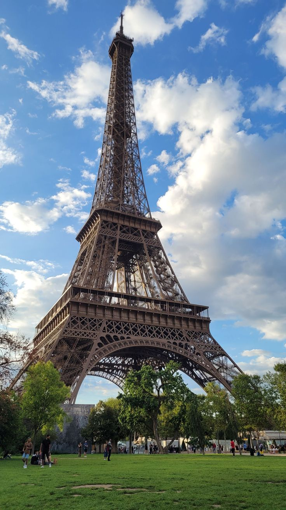
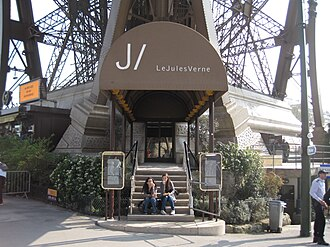

TRAVEL
Travel far enough to meet the version of yourself
you’ve been waiting for —
Paris is a beautiful place to start.”
|
|
✈️ Why it's Important To Travel....🌎
“The world is wide, and life is short.”
We travel because some dreams refuse to stay still.
Because maps whisper names of places we haven’t met yet.
Travel turns ordinary days into stories and thoughts into destinations.
“Not all those who wander are lost.”
Every journey begins with a single choice — where next?
A city that calls your heart, a street you’ve never walked, a view that feels like a promise.
Travel invites you to plan, to dream, to step forward.
“Go where you feel most alive.”
Choose a destination that moves you.
Pack memories before bags.
Because the best plans aren’t made out of fear — they’re made out of wonder.
Your next destination isn’t just a place on the map.
It’s a feeling waiting to happen.
Destinations / Places
🗼 Eiffel Tower


The symbol of Paris, offering unforgettable views, romantic vibes,
and magical moments—especially at night..... click to know more.
“Shepherdess, O Eiffel Tower, the flock of bridges bleats this morning.”
“At night, the Eiffel Tower whispers secrets to the Seine.”
“Iron rises into poetry, and Paris listens.”
🏛️ Louvre Museum


A world-famous museum where history, art, and architecture come together in one iconic place.....
click to know more.
“The Louvre is a palace where time stands still and beauty breathes.”
“Here, centuries speak in brushstrokes and stone.”
🏨 Hotels
1. Pullman Paris Tour Eiffel


 ⭐️4.6 / Hotel / $356
📍 Address: 18 Avenue De Suffren & 22 Rue Jean Rey Entrée Au, 75015 Paris, France
📞 Phone: +33 1 44 38 56 00
"A luxury hotel just a few minutes’ walk from the Eiffel Tower — perfect for travelers who want comfort and convenience near the landmark. Known for modern rooms and Eiffel views. �
WFEO"
2. Hôtel du Louvre - The Unbound Collection by Hyatt
⭐️4.6 / Hotel / $356
📍 Address: 18 Avenue De Suffren & 22 Rue Jean Rey Entrée Au, 75015 Paris, France
📞 Phone: +33 1 44 38 56 00
"A luxury hotel just a few minutes’ walk from the Eiffel Tower — perfect for travelers who want comfort and convenience near the landmark. Known for modern rooms and Eiffel views. �
WFEO"
2. Hôtel du Louvre - The Unbound Collection by Hyatt


 ⭐️4.6 / (1200+ reviews)
Luxury historic hotel right by Place André Malraux, minutes from the Louvre Pyramid.
Elegant rooms, great service, refined restaurant/bar.
Perfect for high-end visitors and art lovers.
hotel is located at Place André Malraux, 75001 Paris, France, just a short walk from the Louvre Museum.
⭐️4.6 / (1200+ reviews)
Luxury historic hotel right by Place André Malraux, minutes from the Louvre Pyramid.
Elegant rooms, great service, refined restaurant/bar.
Perfect for high-end visitors and art lovers.
hotel is located at Place André Malraux, 75001 Paris, France, just a short walk from the Louvre Museum.
🍽️ Restaurants
1. Jules Verne
 .jpg)
.jpg) ⭐️4.5 / Haute French restaurant / €100+
📍 Address: Avenue Gustave Eiffel 2ème, Eiffel Tower, Av. Anatole France, 75007 Paris, France
📞 Phone: +33 1 83 77 34 34
"A Michelin-starred restaurant inside the Eiffel Tower offering fine French cuisine with a spectacular view — unforgettable for a special dinner."
Wikipedia"
2. Le Relais du Louvre
⭐️4.5 / Haute French restaurant / €100+
📍 Address: Avenue Gustave Eiffel 2ème, Eiffel Tower, Av. Anatole France, 75007 Paris, France
📞 Phone: +33 1 83 77 34 34
"A Michelin-starred restaurant inside the Eiffel Tower offering fine French cuisine with a spectacular view — unforgettable for a special dinner."
Wikipedia"
2. Le Relais du Louvre


 4.6 ⭐️
Popular bistro with French classics at moderate prices.
Great choice for lunch or dinner near the Louvre.
Highly rated Parisian brasserie at 3 Rue du Louvre, 75001 Paris, France, serving
French classics just steps from the Louvre.
4.6 ⭐️
Popular bistro with French classics at moderate prices.
Great choice for lunch or dinner near the Louvre.
Highly rated Parisian brasserie at 3 Rue du Louvre, 75001 Paris, France, serving
French classics just steps from the Louvre.
☕ Best Cafés
1. Zia


 ⭐️4.6 / Cafe / €20–30
📍 Address: 22 Avenue de Tourville, 75007 Paris, France
📞 Phone: +33 1 44 18 90 71
"Zia is a cozy café just a short walk from the Eiffel Tower — perfect for coffee, brunch, pastries, or light bites before or after your visit.
It’s well-loved for its relaxed atmosphere and friendly service. Many travelers enjoy grabbing a cappuccino here while exploring the 7th arrondissement."
2. Louise Café
⭐️4.6 / Cafe / €20–30
📍 Address: 22 Avenue de Tourville, 75007 Paris, France
📞 Phone: +33 1 44 18 90 71
"Zia is a cozy café just a short walk from the Eiffel Tower — perfect for coffee, brunch, pastries, or light bites before or after your visit.
It’s well-loved for its relaxed atmosphere and friendly service. Many travelers enjoy grabbing a cappuccino here while exploring the 7th arrondissement."
2. Louise Café
 cafe 2.jpg)
 cafe 3.jpg)
 4.5 ⭐️
Cozy café and brasserie located at 8 Rue Croix des Petits Champs, 75001 Paris, France, ideal for coffee and
light meals near the museum.
Cozy café & brasserie a short walk away — French café favorites and relaxed vibe.
4.5 ⭐️
Cozy café and brasserie located at 8 Rue Croix des Petits Champs, 75001 Paris, France, ideal for coffee and
light meals near the museum.
Cozy café & brasserie a short walk away — French café favorites and relaxed vibe.